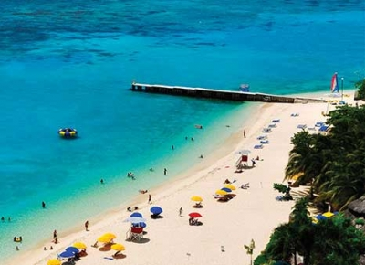

San Andrés: un paraíso para los amantes del turismo aventura
Separada de las costas del país por unos 700 km, es elegida por ser un paraíso con playas de arenas blancas, palmeras y cocoteros, un mar de siete colores y fantásticas formaciones coralinas. Además, producto de la influencia de ingleses, españoles, africanos, piratas y corsarios que formaron parte de su historia, posee una importante diversidad cultural. En sus calles escucharás hablar el creole: una mezcla de inglés isabelino, español y dialectos africanos; también oirás hablar en español y en inglés. Por sus características geográficas y naturales, san andres islas es visitada año tras año para practicar deportes como snorkel, buceo, surf, windsurf, entre otros. Por eso, además de ser un paraíso para relajarse, es ideal para los amantes del turismo aventura.
Actividades bajo el agua
En la isla encontrarás muchas ofertas para realizar actividades bajo el agua. Esto se debe a que una de las características principales de este destino es que cuenta con formaciones coralinas que le dan distintos tonos a sus aguas. En ellas podrás bucear o practicar snorkel para contemplar su rico ecosistema marino, nadar entre peces de colores, mantarrayas y diversas especies que te dejarán maravillado.
Johnny Cay
Numerosos turistas se acercan a San Andrés a hacer kitesurf, ya que los vientos que corren en esta zona crean el ambiente ideal para practicar este deporte; si bien los mejores meses para practicarlo son entre noviembre y enero, en general puede realizarse casi todo el año. Lo mismo ocurre con los amantes del surf y el windsurf, que llegan de todo el mundo atraídos por el hermoso paisaje que posee el lugar.
Caminatas
No todo lo que puede hacerse en este paradisíaco lugar tiene que ver con el agua: también puedes visitar la laguna de Big Pond, caminando 30 minutos hacia la zona más alta de la isla de San Andrés y conocer su jardín botánico. En Providencia puedes subir al punto de elevación más alto llamado The Peak - El Pico - en una caminata de unas tres horas y desde su cima contemplar la panorámica Santa Catalina, Providencia y la barrera de coral.

Jamaica atraviesa un auge turístico y en camino a alcanzar un récord de turistas
La Oficina de Turismo de Jamaica (JTB) proyecta que Jamaica habrá recibido 4,2 millones de visitantes al terminar 2017, rebasando los 3,84 millones de visitantes del año pasado y marcando un nuevo récord.
De acuerdo con estadísticas preliminares sobre las llegadas, la industria turística de Jamaica obtuvo $1460 millones de dólares en la primera mitad de este año, un aumento de 5.8% sobre el mismo periodo en 2016. En julio, Jamaica recibió más de 234.051 visitantes por escalas, un aumento de 10,8% sobre el mismo periodo el año pasado.
El sector de los cruceros también está encaminado a alcanzar el número más alto de pasajeros que ha tenido: del 1 de enero a finales de julio de 2017, Jamaica recibió 1.088.718 pasajeros de cruceros, un aumento de 4,9 por ciento con respecto al mismo periodo del año pasado. Se espera que esa trayectoria de crecimiento continúe, especialmente ahora que Jamaica evoluciona para convertirse en uno de los destinos líderes para cruceros en el Caribe con el respaldo de su iniciativa lanzada recientemente, Cruise Jamaica.
Debido al auge turístico de Jamaica, la isla experimenta una expansión de los hoteles existentes y nuevos desarrollos en todo su territorio, lo cual arroja un aumento considerable de habitaciones. Este destino turístico está en camino de obtener 15.000 habitaciones adicionales para 2021, lo cual seguirá impulsando el crecimiento del sector al aumentar tanto las llegadas como los ingresos.
Con este auge turístico y mayor flujo de visitantes, la JTB sostiene que su objetivo principal es garantizar que el destino siga siendo un refugio para visitantes de todo el mundo. Se están haciendo grandes inversiones en los programas ya existentes y en nuevas iniciativas vitales para fortalecer una experiencia segura disfrutable que incluye el Programa de Capacitación de los Agentes Distritales y los Consejos de Protección del Destino.
Perfil del autor
Investigador del Rosen College of Hospitality Management (RCHM) de la Universidad Central de la Florida (UFC), quien desarrolló dentro su ponencia la temática de Turismo y Felicidad.
Sus campos de interés incluyen: aplicaciones econométricas en hotelería, análisis / previsión de la demanda turística, impacto económico del turismo, turismo competitivo y sostenible en el análisis del desarrollo turístico, desarrollo del turismo aplicado al alivio de la pobreza y desarrollo del turismo en pequeñas islas y países en desarrollo.